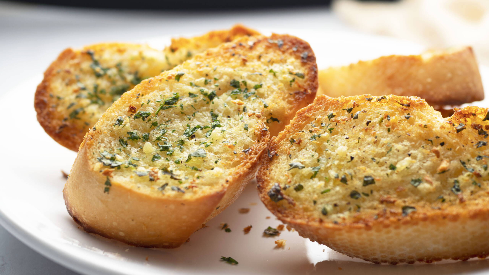

Delicous Garlic Bread
This recipe is easy to follow, but will make some finger licking garlic bread
Ingredients
- 4 cloves garlic, minced
- 1/2 c. (1 stick) butter, softened
- 1 baguette or French bread, cut lengthwise
- 1/2 tsp. kosher salt
- 2 tbsp. freshly chopped parsley
- 1/4 c. grated Parmesan
Steps
- Preheat oven to 425° and line a large baking sheet with foil. Make garlic compound butter: In a small bowl, mix softened butter with garlic, salt, and parsley until well combined.
- Spread cut sides of bread liberally with garlic butter. Sprinkle with Parmesan.
- Bake until bread is toasty and golden at the edges, about 10 minutes.